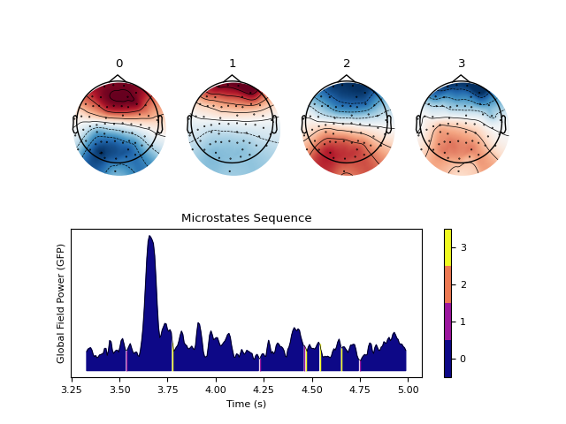
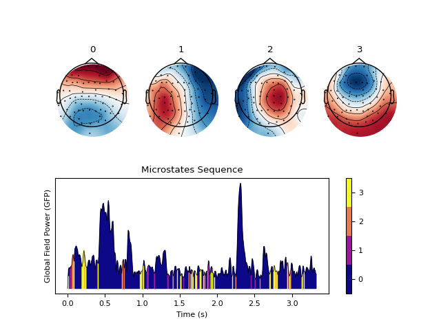
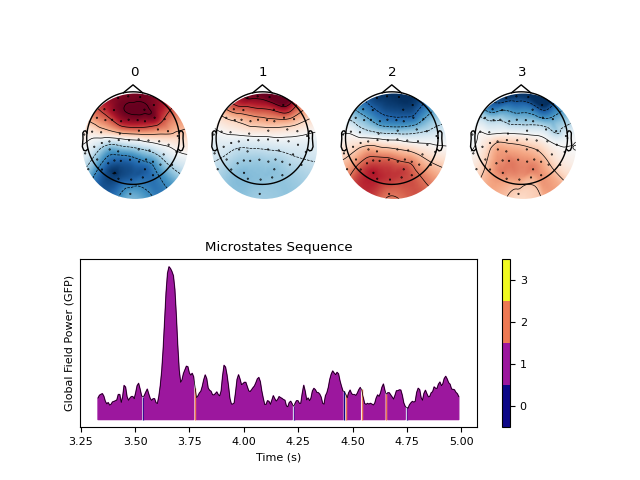
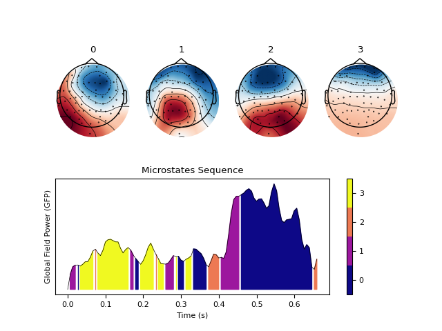

M/EEG Microstates
Contents
M/EEG Microstates#
Main#
microstates_segment()#
- microstates_segment(eeg, n_microstates=4, train='gfp', method='kmod', gfp_method='l1', sampling_rate=None, standardize_eeg=False, n_runs=10, max_iterations=1000, criterion='gev', random_state=None, optimize=False, **kwargs)[source]#
Segment M/EEG signal into Microstates
This functions identifies and extracts the microstates from an M/EEG signal using different clustering algorithms. Several runs of the clustering algorithm are performed, using different random initializations.The run that resulted in the best segmentation, as measured by global explained variance (GEV), is used.
kmod: Modified k-means algorithm.
kmeans: Normal k-means.
kmedoids: k-medoids clustering, a more stable version of k-means.
pca: Principal Component Analysis.
ica: Independent Component Analysis.
aahc: Atomize and Agglomerate Hierarchical Clustering. Computationally heavy.
The microstates clustering is typically fitted on the EEG data at the global field power (GFP) peaks to maximize the signal to noise ratio and focus on moments of high global neuronal synchronization. It is assumed that the topography around a GFP peak remains stable and is at its highest signal-to-noise ratio at the GFP peak.
- Parameters
eeg (np.ndarray) – An array (channels, times) of M/EEG data or a Raw or Epochs object from MNE.
n_microstates (int) – The number of unique microstates to find. Defaults to 4.
train (Union[str, int, float]) – Method for selecting the timepoints how which to train the clustering algorithm. Can be
"gfp"to use the peaks found in the Peaks in the global field power. Can be"all", in which case it will select all the datapoints. It can also be a number or a ratio, in which case it will select the corresponding number of evenly spread data points. For instance,train=10will select 10 equally spaced datapoints, whereastrain=0.5will select half the data. Seemicrostates_peaks().method (str) – The algorithm for clustering. Can be one of
"kmod"(default),"kmeans","kmedoids","pca","ica", or"aahc".gfp_method (str) – The GFP extraction method, can be either
"l1"(default) or"l2"to use the L1 or L2 norm. Seenk.eeg_gfp()for more details.sampling_rate (int) – The sampling frequency of the signal (in Hz, i.e., samples/second).
standardize_eeg (bool) – Standardized (z-score) the data across time prior to GFP extraction using
nk.standardize().n_runs (int) – The number of random initializations to use for the k-means algorithm. The best fitting segmentation across all initializations is used. Defaults to 10.
max_iterations (int) – The maximum number of iterations to perform in the k-means algorithm. Defaults to 1000.
criterion (str) – Which criterion to use to choose the best run for modified k-means algorithm, can be
"gev"(default) which selects the best run based on the highest global explained variance, or"cv"which selects the best run based on the lowest cross-validation criterion. Seenk.microstates_gev()andnk.microstates_crossvalidation()for more details respectively.random_state (Union[int, numpy.random.RandomState]) – The seed or
RandomStatefor the random number generator. Defaults toNone, in which case a different seed is chosen each time this function is called.optimize (bool) – Optimized method in Poulsen et al. (2018) for the k-means modified method.
- Returns
dict – Contains information about the segmented microstates:
Microstates: The topographic maps of the found unique microstates which has a shape of n_channels x n_states
Sequence: For each sample, the index of the microstate to which the sample has been assigned.
GEV: The global explained variance of the microstates.
GFP: The global field power of the data.
Cross-Validation Criterion: The cross-validation value of the iteration.
Explained Variance: The explained variance of each cluster map generated by PCA.
Total Explained Variance: The total explained variance of the cluster maps generated by PCA.
Examples
Example 1: k-means Algorithm
In [1]: import neurokit2 as nk # Download data In [2]: eeg = nk.mne_data("filt-0-40_raw") # Average rereference and band-pass filtering In [3]: eeg = nk.eeg_rereference(eeg, 'average').filter(1, 30, verbose=False) # Cluster microstates In [4]: microstates = nk.microstates_segment(eeg, method="kmeans") In [5]: nk.microstates_plot(microstates , epoch=(500, 750)) # Modified kmeans (currently comment out due to memory error) #out_kmod = nk.microstates_segment(eeg, method='kmod') # nk.microstates_plot(out_kmod, gfp=out_kmod["GFP"][0:500]) # K-medoids (currently comment out due to memory error) #out_kmedoids = nk.microstates_segment(eeg, method='kmedoids') #nk.microstates_plot(out_kmedoids, gfp=out_kmedoids["GFP"][0:500])
Example with PCA
In [6]: out_pca = nk.microstates_segment(eeg, method='pca', standardize_eeg=True) In [7]: nk.microstates_plot(out_pca, gfp=out_pca["GFP"][0:500])

Example with ICA
In [8]: out_ica = nk.microstates_segment(eeg, method='ica', standardize_eeg=True) In [9]: nk.microstates_plot(out_ica, gfp=out_ica["GFP"][0:500])
Example with AAHC
In [10]: out_aahc = nk.microstates_segment(eeg, method='aahc') In [11]: nk.microstates_plot(out_aahc, gfp=out_aahc["GFP"][0:500])
See also
eeg_gfp,microstates_peaks,microstates_gev,microstates_crossvalidation,microstates_classifyReferences
Poulsen, A. T., Pedroni, A., Langer, N., & Hansen, L. K. (2018). Microstate EEGlab toolbox: an introductory guide. BioRxiv, (289850).
Pascual-Marqui, R. D., Michel, C. M., & Lehmann, D. (1995). Segmentation of brain electrical activity into microstates: model estimation and validation. IEEE Transactions on Biomedical Engineering.
{kind=link}
{kind=link}
{kind=link}
microstates_plot()#
- microstates_plot(microstates, segmentation=None, gfp=None, info=None, epoch=None)[source]#
Visualize Microstates
Plots the clustered microstates.
- Parameters
microstates (np.ndarray) – The topographic maps of the found unique microstates which has a shape of n_channels x n_states, generated from
microstates_segment().segmentation (array) – For each sample, the index of the microstate to which the sample has been assigned. Defaults to
None.gfp (array) – The range of global field power (GFP) values to visualize. Defaults to
None, which will plot the whole range of GFP values.info (dict) – The dictionary output of
nk.microstates_segment(). Defaults toNone.epoch (tuple) – A sub-epoch of GFP to plot in the shape
(beginning sample, end sample).
- Returns
fig – Plot of prototypical microstates maps and GFP across time.
Examples
In [1]: import neurokit2 as nk # Download data In [2]: eeg = nk.mne_data("filt-0-40_raw") # Average rereference and band-pass filtering In [3]: eeg = nk.eeg_rereference(eeg, 'average').filter(1, 30, verbose=False) # Cluster microstates In [4]: microstates = nk.microstates_segment(eeg, method='kmeans', n_microstates=4) In [5]: nk.microstates_plot(microstates, epoch=(500, 750))
{kind=link}
microstates_classify()#
- microstates_classify(segmentation, microstates)[source]#
Reorder (sort) the microstates (experimental)
Reorder (sort) the microstates (experimental) based on the pattern of values in the vector of channels (thus, depends on how channels are ordered).
- Parameters
segmentation (Union[np.array, dict]) – Vector containing the segmentation.
microstates (Union[np.array, dict]) – Array of microstates maps . Defaults to
None.
- Returns
segmentation, microstates – Tuple containing re-ordered input.
Examples
In [1]: import neurokit2 as nk In [2]: eeg = nk.mne_data("filt-0-40_raw").filter(1, 35, verbose=False) In [3]: eeg = nk.eeg_rereference(eeg, 'average') # Original order In [4]: out = nk.microstates_segment(eeg) In [5]: nk.microstates_plot(out, gfp=out["GFP"][0:100]) # Reorder In [6]: out = nk.microstates_classify(out["Sequence"], out["Microstates"])
{kind=link}
microstates_clean()#
- microstates_clean(eeg, sampling_rate=None, train='gfp', standardize_eeg=True, normalize=True, gfp_method='l1', **kwargs)[source]#
Prepare eeg data for microstates extraction
- Parameters
eeg (np.ndarray) – An array (channels, times) of M/EEG data or a Raw or Epochs object from MNE.
sampling_rate (int) – The sampling frequency of the signal (in Hz, i.e., samples/second). Defaults to
None.train (Union[str, int, float]) – Method for selecting the timepoints how which to train the clustering algorithm. Can be
"gfp"to use the peaks found in thePeaksin the global field power. Can be"all", in which case it will select all the datapoints. It can also be a number or a ratio, in which case it will select the corresponding number of evenly spread data points. For instance,train=10will select 10 equally spaced datapoints, whereastrain=0.5will select half the data. Seemicrostates_peaks().standardize_eeg (bool) – Standardize (z-score) the data across time using
nk.standardize(), prior to GFP extraction and running k-means algorithm. Defaults toTrue.normalize (bool) – Normalize (divide each data point by the maximum value of the data) across time prior to GFP extraction and running k-means algorithm. Defaults to
True.gfp_method (str) – The GFP extraction method to be passed into
nk.eeg_gfp(). Can be either"l1"(default) or"l2"to use the L1 or L2 norm.**kwargs (optional) – Other arguments.
- Returns
eeg (array) – The eeg data which has a shape of channels x samples.
peaks (array) – The index of the sample where GFP peaks occur.
gfp (array) – The global field power of each sample point in the data.
info (dict) – Other information pertaining to the eeg raw object.
See also
eeg_gfp,microstates_peaks
microstates_dynamic()#
- microstates_dynamic(microstates)[source]#
Dynamic properties of microstates (transition pattern)
Based on https://github.com/Frederic-vW/eeg_microstates and https://github.com/maximtrp/mchmm
- Parameters
microstates (np.ndarray) – The topographic maps of the found unique microstates which has a shape of n_channels x n_states, generated from
nk.microstates_segment().- Returns
DataFrame – Dynamic properties of microstates: * Results of the observed transition matrix * Chi-square test statistics of the observed microstates against the expected microstates * Symmetry test statistics of the observed microstates against the expected microstates
See also
transition_matrixExamples
In [1]: import neurokit2 as nk In [2]: microstates = [0, 0, 0, 1, 1, 2, 2, 2, 2, 1, 0, 0] In [3]: nk.microstates_dynamic(microstates) Out[3]: Microstate_0_to_0 Microstate_0_to_1 ... Microstate_2_to_1 Microstate_2_to_2 0 0.75 0.25 ... 0.25 0.75 [1 rows x 9 columns]
microstates_findnumber()#
- microstates_findnumber(eeg, n_max=12, show=False, **kwargs)[source]#
Estimate optimal number of microstates
Estimate the optimal number of microstates using a variety of indices.
- Parameters
eeg (np.ndarray) – An array (channels, times) of M/EEG data or a Raw or Epochs object from MNE.
n_max (int) – Maximum number of microstates to try. A higher number leads to a longer process.
show (bool) – Plot indices normalized on the same scale.
**kwargs – Arguments to be passed to
microstates_segment()
- Returns
DataFrame – The different quality scores for each number of microstates.
See also
Examples
In [1]: import neurokit2 as nk In [2]: eeg = nk.mne_data("filt-0-40_raw").filter(1, 35) Filtering raw data in 1 contiguous segment Setting up band-pass filter from 1 - 35 Hz FIR filter parameters --------------------- Designing a one-pass, zero-phase, non-causal bandpass filter: - Windowed time-domain design (firwin) method - Hamming window with 0.0194 passband ripple and 53 dB stopband attenuation - Lower passband edge: 1.00 - Lower transition bandwidth: 1.00 Hz (-6 dB cutoff frequency: 0.50 Hz) - Upper passband edge: 35.00 Hz - Upper transition bandwidth: 8.75 Hz (-6 dB cutoff frequency: 39.38 Hz) - Filter length: 497 samples (3.310 sec) In [3]: eeg = nk.eeg_rereference(eeg, 'average') # Estimate optimal number (currently comment out due to memory error) # results = nk.microstates_findnumber(eeg, n_max=4, show=True, method="kmod")
microstates_peaks()#
- microstates_peaks(eeg, gfp=None, sampling_rate=None, distance_between=0.01, **kwargs)[source]#
Find peaks of stability using the GFP
Peaks in the global field power (GFP) are often used to find microstates.
- Parameters
eeg (np.ndarray) – An array (channels, times) of M/EEG data or a Raw or Epochs object from MNE.
gfp (list) – The Global Field Power (GFP). If
None, will be obtained viaeeg_gfp().sampling_rate (int) – The sampling frequency of the signal (in Hz, i.e., samples/second).
distance_between (float) – The minimum distance (this value is to be multiplied by the sampling rate) between peaks. The default is 0.01, which corresponds to 10 ms (as suggested in the Microstate EEGlab toolbox).
**kwargs – Additional arguments to be passed to
eeg_gfp().
- Returns
peaks (array) – The index of the sample where GFP peaks occur.
Examples
import neurokit2 as nk
eeg = nk.mne_data(“filt-0-40_raw”)
gfp = nk.eeg_gfp(eeg) peaks1 = nk.microstates_peaks(eeg, distance_between=0.01) peaks2 = nk.microstates_peaks(eeg, distance_between=0.05) peaks3 = nk.microstates_peaks(eeg, distance_between=0.10) @savefig p_microstates_peaks_png scale=100% nk.events_plot([peaks1[peaks1 < 500],
peaks2[peaks2 < 500], peaks3[peaks3 < 500]], gfp[0:500])
@suppress plt.close()
See also
eeg_gfp
microstates_static()#
- microstates_static(microstates, sampling_rate=1000, show=False)[source]#
Static properties of microstates
The duration of each microstate is also referred to as the Ratio of Time Covered (RTT) in some microstates publications.
- Parameters
microstates (np.ndarray) – The topographic maps of the found unique microstates which has a shape of n_channels x n_states, generated from
nk.microstates_segment().sampling_rate (int) – The sampling frequency of the signal (in Hz, i.e., samples/second). Defaults to 1000.
show (bool) – Returns a plot of microstate duration, proportion, and lifetime distribution if
True.
- Returns
DataFrame – Values of microstates proportion, lifetime distribution and duration (median, mean, and their averages).
Examples
In [1]: import neurokit2 as nk In [2]: microstates = [0, 0, 0, 1, 1, 2, 2, 2, 2, 1, 0, 0] In [3]: nk.microstates_static(microstates, sampling_rate=100) Out[3]: Microstate_0_Proportion ... Microstate_Average_DurationMedian 0 0.416667 ... 0.02 [1 rows x 14 columns]